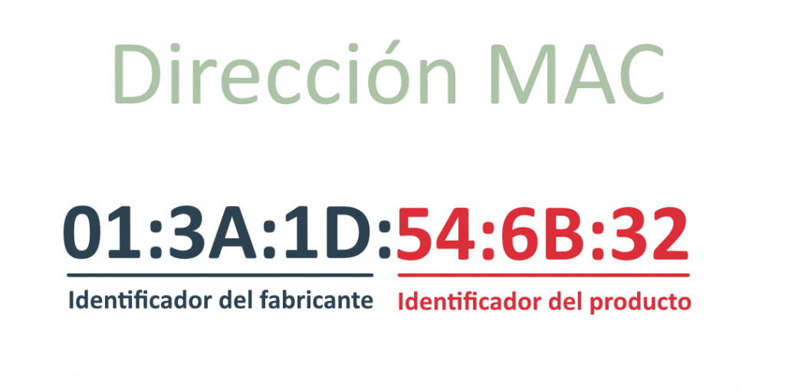
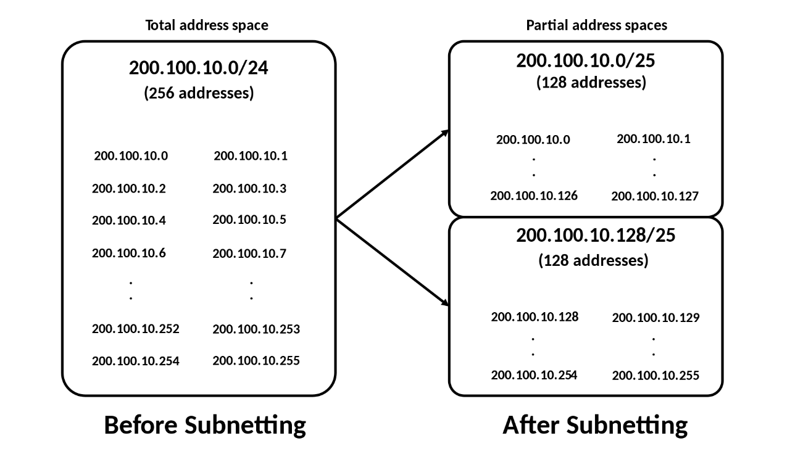
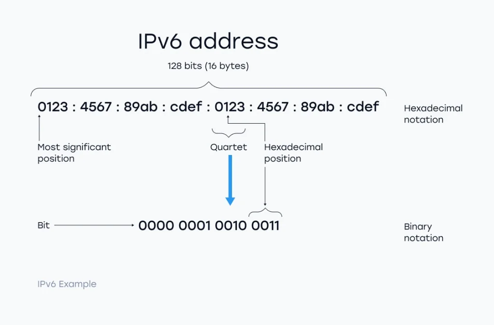

Para que dos sistemas se comuniquen en una red, deben poder identificarse y localizarse entre sí. Esto se logra a través del uso de direcciones únicas. Aunque algunos ejemplos no reflejan direcciones reales, representan el concepto de agrupamiento: se utiliza una parte para identificar la red y otra para identificar al host.
Un equipo puede estar conectado a más de una red, por lo que necesitará más de una dirección IP, una para cada conexión (o interfaz). Esto permite que otros dispositivos localicen ese equipo en diferentes redes.
Una dirección IP opera en la Capa 3 del modelo OSI y está compuesta por 32 bits (IPv4). Por facilidad, se escribe en formato decimal punteado, dividido en cuatro octetos (por ejemplo: 192.168.1.2). Cada octeto puede tomar un valor de 0 a 255.
Este formato facilita la lectura y reduce los errores, comparado con largas cadenas binarias. Por ejemplo, es más claro diferenciar 192.168.1.8 de 192.168.1.9 que sus equivalentes binarios.
En IPv4, cada dirección IP consta de dos partes: una que identifica la red y otra que identifica el host. Esto es comparable con una carta postal: primero se dirige a la ciudad (la red), y luego al domicilio específico (el host).
Las direcciones IP se clasifican en clases para facilitar su organización:
Primer bit es 0. Rango del primer octeto: 1 a 126. Grandes redes.
Comienza con 10. Rango: 128 a 191. Redes medianas.
Comienza con 110. Rango: 192 a 223. Redes pequeñas.
Comienza con 1110. Rango: 224 a 239. Uso para multicast.
Comienza con 1111. Rango: 240 a 255. Reservada para investigación.
La dirección 127.0.0.1 está reservada para pruebas internas (loopback).
Todos los dispositivos de red tienen una dirección MAC única, asignada por el fabricante. Estas operan en la Capa 2 del modelo OSI y permiten identificar físicamente cada dispositivo.
Una dirección IP como 192.168.1.8 en binario se representa como:
11000000.10101000.00000001.00001000
Pero es más fácil identificar patrones y evitar errores usando la forma decimal.
El subnetting permite dividir una red grande en subredes más pequeñas. Esto mejora la eficiencia, la seguridad y la organización interna. Para ello se usan máscaras de subred como 255.255.255.0.
El número de subredes disponibles depende de cuántos bits se reserven para la parte de red. Esto permite crear jerarquías internas dentro de grandes organizaciones.
CIDR elimina la limitación del direccionamiento por clases, permitiendo definir bloques de direcciones más flexibles. Se usa la notación: 192.168.1.0/24, donde /24 indica cuántos bits corresponden a la red.
IPv6 es la evolución de IPv4 y permite una cantidad prácticamente ilimitada de direcciones. Su formato de 128 bits soporta 340 sextillones de direcciones, lo que resuelve la escasez de IPv4.
IPv6 fue adoptado por la IETF en 1994 y también se conoce como IPng. Aunque fue diseñado con seguridad mejorada, su adopción aún está en curso. Se utilizan firewalls y otras herramientas modernas para proteger redes IPv6.
| Característica | IPv4 | IPv6 |
|---|---|---|
| Longitud | 32 bits (4.294 millones de direcciones posibles) | 128 bits (340 sextillones de direcciones posibles) |
| Notación | Decimal (ej. 192.168.0.1) | Hexadecimal (ej. 2001:0db8:85a3::8a2e:0370:7334) |
| Uso de NAT | Puede usar NAT para compartir una IP | No necesita NAT gracias al amplio espacio de direcciones |
IPv6 está compuesto por dos partes: el prefijo de red (64 bits) y el identificador de interfaz (64 bits), que a menudo se genera desde la dirección MAC del dispositivo.
IPv4 sigue siendo ampliamente usado, pero con la expansión de internet y el crecimiento de dispositivos conectados, el futuro apunta claramente hacia la adopción de IPv6 como solución definitiva.